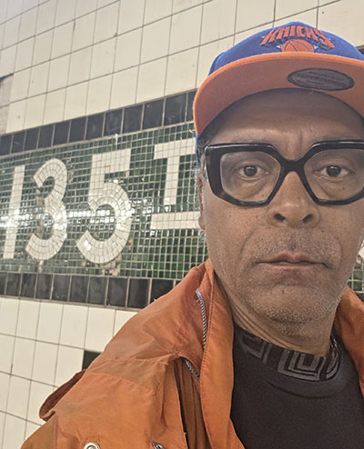

Bachelor of Science in Electrical Engineering: Howard University, Washington D.C.
Brooklyn Technical High School
Cisco Certified Network Associate - CCNA (expired)

Anthony De Silva
Anthony has extensive experience in optical multiplexing, routing and switching network infrastructure design and management, with a focus on project management and field implementation, installing and supporting multi-protocol data networks for business enterprises and telecommunications carriers. His career experience has included work for Verizon, Bell Atlantic, NYNEX, New York Telephone and Con Edison Communications; he also applied his engineering and management skills performing construction project management work experience at the New York City School Construction Authority (NYCSCA), as a project officer.
Anthony grew through a variety of professional experiences where he designed and deployed internet protocol multiplexer, router and switch Gigabit Ethernet, Wave Division Multiplexer and SONET networks. Additionally, Anthony planned, configured and provisioned IP data networks, and provided detailed engineering specifications for installations. He managed network integration projects, and coordinated implementations with vendors and customers. Also Anthony provided technical support for pre-sale design specifications and supported network management and customer service delivery. Through his career in telecom, Anthony has acquired extensive knowledge of and experience with internet architecture and routing protocols.
Born in Brooklyn New York and a graduate of Brooklyn Technical High School.